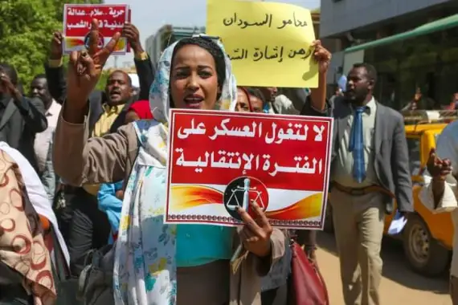

<!doctype html>
<html dir="rtl" lang="ar"></html>

<head>
  <!-- Required meta tags -->

  <meta charset="utf-8">
  <meta name="viewport" content="width=device-width, initial-scale=1.0">

  <!-- Bootstrap CSS -->
  <link rel="stylesheet" type="text/css" href="css/bootstrap.css">
	<link rel="stylesheet" type="text/css" href="css/styles.css">

  <title>الجزيرة نت</title>
</head>

<body class="mx-5">


  <div class="container-xxl">

    
    <nav class="navCo pt-0 navbar navbar-expand-sm navbar-light justify-content-center ">
      
        <button class="navbar-toggler" type="button" data-bs-toggle="collapse" data-bs-target="#collapsibleNavbar">
          <span class="navbar-toggler-icon"></span>
        </button>
        <!--this part for navbar-->
        
              <!--the logo picture-->
        <a class="mt-0" target="_blank" href="https://www.aljazeera.net/?fbclid=IwAR1Y-7AVkRpCp7FT3oEl4LFcHEsLCE2n8yv_4ZWzHU6zrdArEihQpjtaN3c"></a>
            
        <div class="collapse navbar-collapse" id="collapsibleNavbar">
          <ul class="navbar-nav">
      
            <li class="nav-item ">
              <a class="nav-link fw-bold" href="#">سياسة</a>
              
            </li>
            <li class="nav-item">
              <a class="nav-link fw-bold black" href="#">اقتصاد</a>
            </li>
            <li class="nav-item">
              <a class="nav-link fw-bold black" href="#">ثقافة</a>
            </li>  
            <li class="nav-item">
              <a class="nav-link fw-bold" href="#">رياضة</a>
            </li>  
            <li class="nav-item">
              <a class="nav-link fw-bold" href="#">فن</a>
            </li>  
            <li class="nav-item">
              <a class="nav-link fw-bold" href="#">تكنولوجيا</a>
            </li>  
            <li class="nav-item">
              <a class="nav-link fw-bold" href="#">تراث</a>
            </li>  
            <li class="nav-item">
              <a class="nav-link fw-bold" href="#">ميدان</a>
            </li>  
            <li class="nav-item">
              <a class="nav-link fw-bold" href="#">ريادة</a>
            </li>  
            <li class="nav-item dropdown">
              <a class="fw-bold nav-link dropdown-toggle black" href="#" role="button" data-bs-toggle="dropdown">البرامج</a>
              <ul class="dropdown-menu">
                <li><a class="dropdown-item" href="#">Link</a></li>
                <li><a class="dropdown-item" href="#">Another link</a></li>
                <li><a class="dropdown-item" href="#">A third link</a></li>
              </ul>
            </li>
            <li class="nav-item dropdown">
              <a class="fw-bold nav-link dropdown-toggle black" href="#" role="button" data-bs-toggle="dropdown">المزيد</a>
              <ul class="dropdown-menu">
                <li><a class="dropdown-item" href="#">Link</a></li>
                <li><a class="dropdown-item" href="#">Another link</a></li>
                <li><a class="dropdown-item" href="#">A third link</a></li>
              </ul>
            </li>
            <li>
              <div class="container">
                <div class="row height d-flex justify-content-center align-items-center">
                    <div class="col-md-6">
                        <div class="form ps-4"> <i class="fa fa-search"></i> <input type="text" class="form-control form-input" placeholder="Search "> <span class="left-pan"><i class="fa fa-microphone"></i></span> </div>
                    </div>
                </div>
            </div>
            </li>
          </ul>

        </div>
      </div>
    </nav>


  <!--for main news-->
  <div class="row">
    <div class="col-sm-8 img-fluid"></div>

    <div class="col-sm-4 pt-4 ">
      <a target="_blank" class="text-decoration-none text-body fw-bold fs-2"
        href="https://www.aljazeera.net/news/politics/2021/10/21/%D8%A7%D9%84%D8%B3%D9%88%D8%AF%D8%A7%D9%86-15">"قبيل "مليونية" الخميس.. الشارع السوداني منقسم بين معسكرين والجيش يغلق كل الطرق إلى مقر قيادته"</a>
        <p class="fs-6 mt-5 text-secondry">أغلق الجيش السوداني اليوم الخميس كل الطرق المؤدية لمقر قيادته وسط العاصمة الخرطوم، قبيل انطلاق مظاهرات تطالب بالحكم المدني وإنهاء الشراكة مع العسكريين في السلطة واستكمال الانتقال السلمي الديمقراطي.
        </p>
        <div>
          <a href="https://www.facebook.com/profile.php?id=100008189200433"></a>
          <a href="https://twitter.com/?lang=en"></a>
        </div>
    </div>
    
  </div>

  <!--under the image-->
  <div class="row p-3 fs-6 " >
    <div class="col "><a class="text-decoration-none blackk fw-bold" target="_blank" href="https://www.aljazeera.net/news/politics/2021/10/20/%d9%88%d9%8f%d8%b5%d9%81-%d8%a8%d8%a7%d9%84%d9%8a%d9%88%d9%85-%d8%a7%d9%84%d8%a3%d9%87%d9%85-%d9%81%d9%8a-%d9%85%d8%b3%d8%a7%d8%b1-%d8%a7%d9%84%d8%ab%d9%88%d8%b1%d8%a9-%d9%85%d8%ae%d8%a7%d9%88%d9%81">قلق من صدامات واسعة.. هل تقود احتجاجات الخميس في السودان إلى فرض حالة الطوارئ؟</a></div>
    <div class="col"><a class="text-decoration-none blackk fw-bold" target="_blank" href="https://www.aljazeera.net/news/politics/2021/10/20/%d8%ae%d9%84%d9%8a%d8%a9-%d9%85%d8%ac%d9%84%d8%b3-%d8%a7%d9%84%d9%88%d8%b2%d8%b1%d8%a7%d8%a1-%d8%a7%d9%84%d8%b3%d9%88%d8%af%d8%a7%d9%86%d9%8a-%d8%ad%d9%84-%d9%84%d9%84%d8%a3%d8%b2%d9%85%d8%a9" >اقترحها مجلس الوزراء السوداني.. بوادر أزمة بسبب “خلية أزمة”</a></div>
    <div class="col"><a class="text-decoration-none blackk fw-bold" target="_blank" href="https://www.aljazeera.net/news/2021/10/18/%d8%af%d8%b9%d9%88%d8%a7%d8%aa-%d9%84%d8%aa%d8%b3%d9%85%d9%8a%d8%a9-%d8%b3%d9%81%d9%8a%d8%b1-%d8%a8%d8%a7%d9%84%d8%ae%d8%b1%d8%b7%d9%88%d9%85-%d8%aa%d8%ad%d8%b1%d9%83" >اهتمام أميركي بتطورات الأزمة في السودان وسط دعوات لتسمية سفير بالخرطوم
      اعلان</a></div>
  </div>

  <script src="js/popper.js"></script>
	<script src="js/bootstrap.js"></script>

</body>

</html>